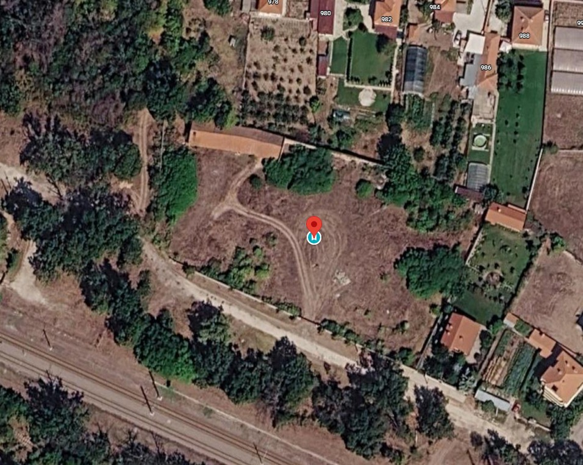
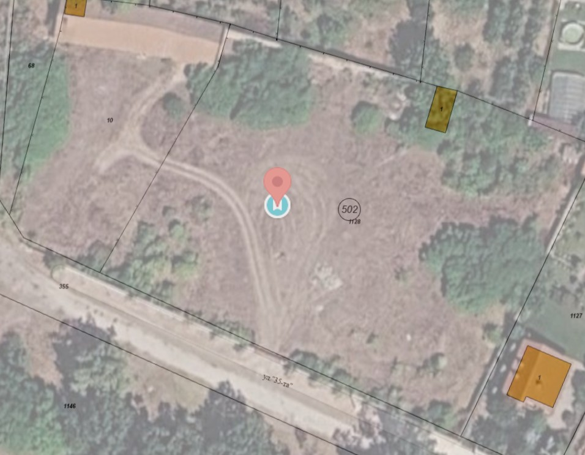
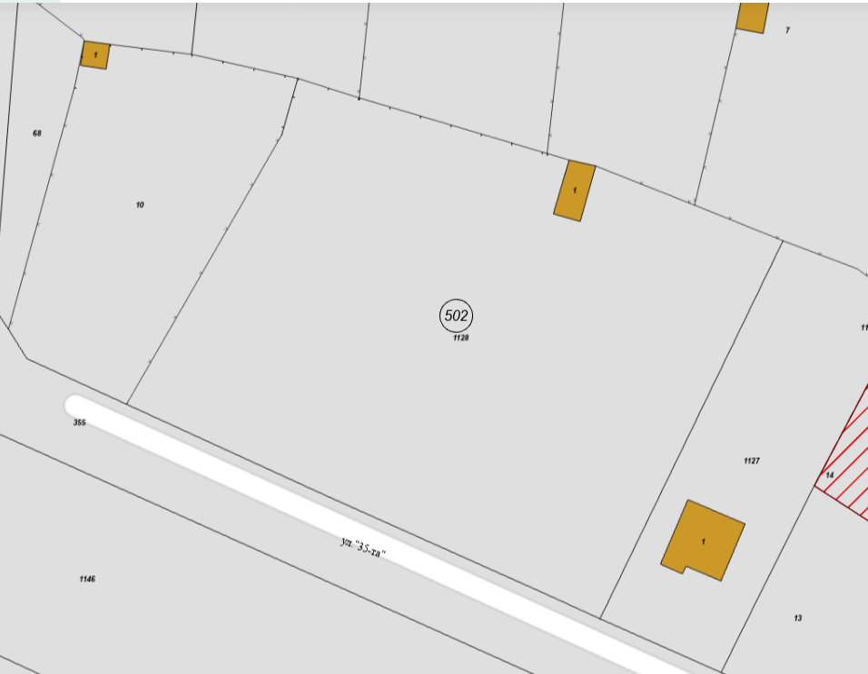
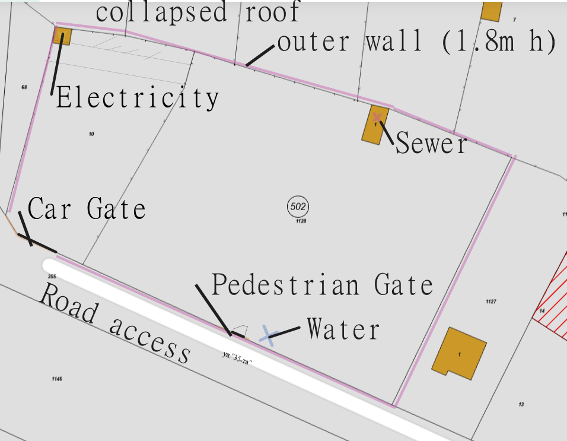
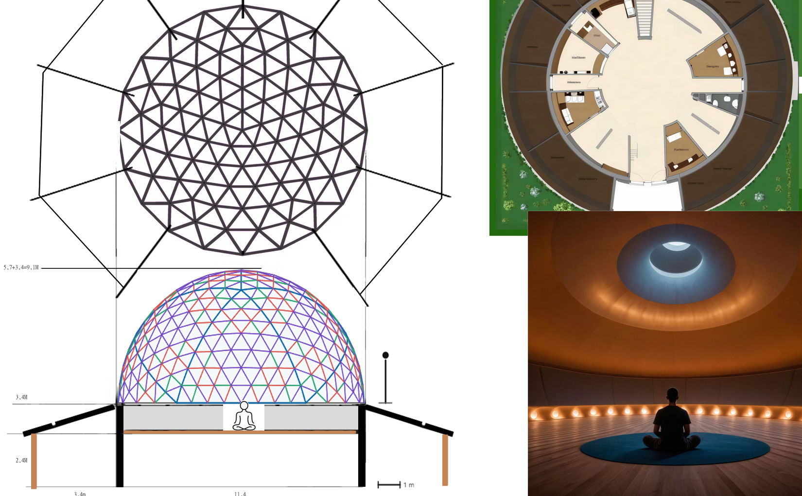
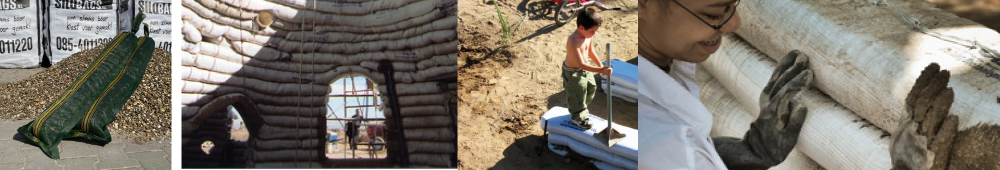
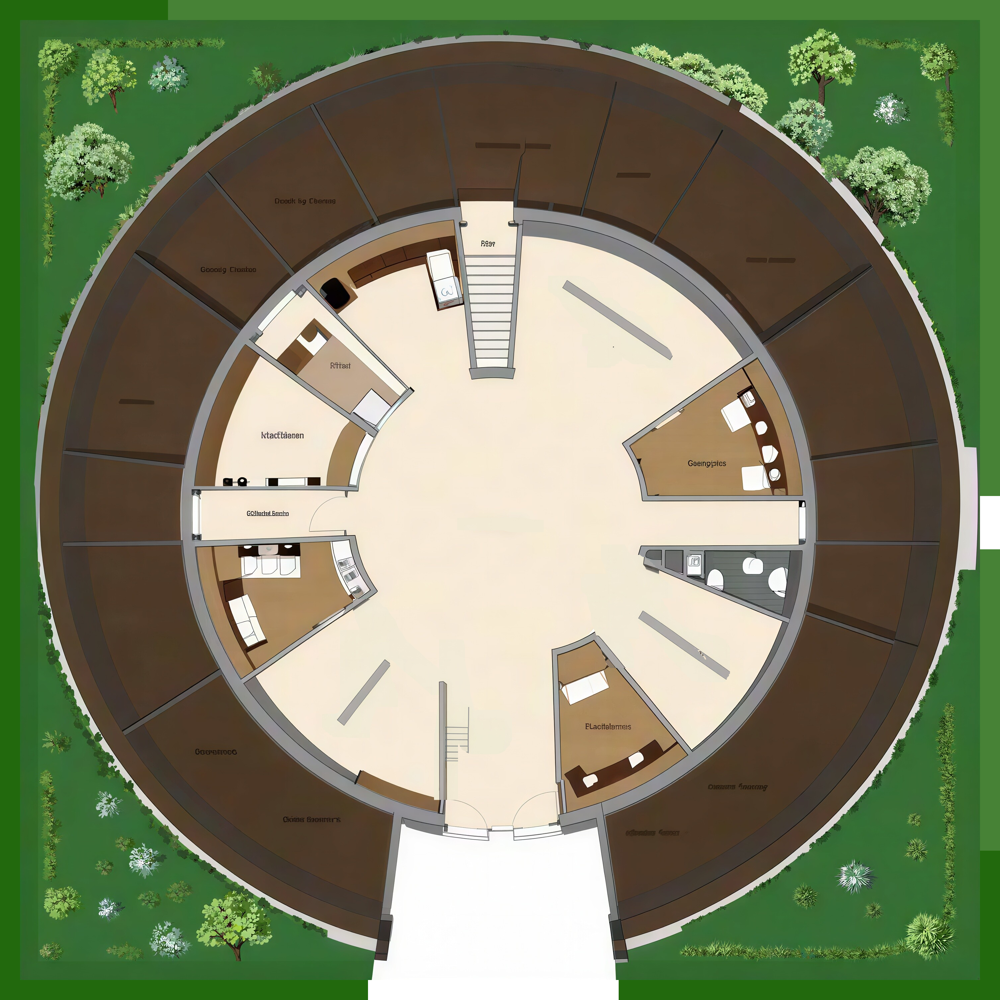

Manole Dome and Superadobe Wall Куполът на Маноле и стена от суперадоб
Initial brief for architectural and engineering development Начален бриф за архитектурно и инженерно развитие
Property and site maps Карта на имота и терена
Location references for the Manole site. The cadastral outline is for preliminary planning only.
Локационни референции за имота в Маноле. Кадастралният контур е само за предварително планиране.




1. Site and project timing 1. Терeн и график на проекта
- Location: Manole, Bulgaria. See above.
- Target schedule: Build the permanent wall in spring 2027; start the dome and related construction in June–July 2027; finish by 1 December 2027.
- Confirm site boundaries, access, ground conditions, drainage, utilities, planning requirements, and permitting if relevant.
- Локация: Маноле, България. Виж по-горе.
- Целеви график: Изграждане на постоянната стена през пролетта на 2027 г.; старт на купола и свързаните дейности през юни–юли 2027 г.; завършване до 1 декември 2027 г.
- Да се потвърдят граници на имота, достъп, почвени условия, дренаж, комуникации, изисквания за планиране и разрешителни, ако са приложими.

2. Dome specifications 2. Спецификации на купола
Preliminary calculator output for a 4-frequency geodesic dome with a 5.7 m outer radius and an 11.4 m diameter. Final geometry, frame details, and structural loads remain to be confirmed.
Предварителен калкулаторен резултат за 4-частотен геодезичен купол с външен радиус 5.7 m и диаметър 11.4 m. Крайната геометрия, детайли на конструкцията и натоварванията предстои да се потвърдят.
| Sphere outer radius (R) | 5.7 m |
|---|---|
| Dome width / diameter | 11.4 m |
| Dome radius | 5.7 m |
| Equator circumference | 35.81 m |
| Approx. usable floor area | about 100 m² |
| Spherical surface area | 204.14 m² |
| Spherical volume | 387.87 m³ |
| Inner floor radius | about 5.5 m (approximate) |
3. Dome structure and covering 3. Конструкция и покритие на купола
- Nominal dome span: approximately 11.4 m.
- Use the outer wall face as the reference line: 5.7 m radius is the outer face of the permanent wall and is flush with the outer face of the dome support above.
- The inner usable floor radius may be smaller; use approximately 100 m² as the working usable floor area unless the geometry is recalculated.
- 4-frequency geodesic, based on the project’s stated Bulgarian snow-load requirement. Verify the site-specific snow and wind loads in the structural design.
- Frame: cold-pressed, flattened steel pipes bolted together. The builder/architect is familiar with this construction method.
- Estimated steel frame weight: less than 2,000 kg; verify the final frame weight and design loads.
- Covering: tent/tarpaulin. Allow for overlap at the wall and coordinate the covering with patio openings and beams fitted into wall slots.
- Design the dome so it can be dismantled and potentially relocated after a few years.
- Номинален размах на купола: приблизително 11.4 m.
- Използвайте външната повърхност на стената като референтна линия: радиус 5.7 m е външната повърхност на постоянната стена и е изравнен с външната повърхност на носещия купол отгоре.
- Вътрешният използваем радиус на пода може да е по-малък; използвайте приблизително 100 m² като работна използваема площ, освен ако геометрията не бъде преизчислена.
- 4-частотен геодезичен, съгласно заявеното българско изискване за снегонатоварване. Да се провери конкретното снегово и ветрово натоварване в конструктивния проект.
- Рамка: студено пресовани, сплескани стоманени тръби, болтово свързани. Строителят/архитектът е запознат с този метод.
- Очаквано тегло на стоманената рамка: под 2,000 kg; да се проверят крайната маса и проектните натоварвания.
- Покритие: тента/брезент. Да се предвиди застъпване върху стената и да се координира с отворите към дворовете и гредите, които се вкарват в слотове в стената.
- Куполът да бъде проектиран така, че да може да се разглоби и евентуално премести след няколко години.

4. Permanent wall and dome support 4. Постоянна стена и опора на купола
- Permanent circular superadobe wall, approximately 3.4 m high, rising vertically.
- Approximate wall radius: 5.7 m; this refers to the outer face of the wall. Confirm the radius reference in the drawings if needed.
- Proposed materials and method: woven HDPE bags, filled with the proposed clay/cement mix, with barbed wire between courses.
- Bag specifications: 18 kg each; 120 × 27 cm; packed in units of 60 bags per full big bag.
- Working quantity: 1,000 bags (approximate). Use this as a coarse planning number and refine later if needed.
- Barbed wire can be sourced locally if required.
- A wooden platform/floor will sit on top of the wall, with the dome bearing on the platform.
- Develop and verify the foundation, wall, platform, moisture protection, rainwater detailing, and complete structural load path.
- Design secure steel-pipe anchoring for wind uplift and lateral forces. The connection should also allow the dome to be dismantled and relocated later.
- Постоянна кръгла суперадоб стена с височина приблизително 3.4 m, с вертикално издигане.
- Приблизителен радиус на стената: 5.7 m; това се отнася за външната повърхност на стената. При нужда радиусът да се потвърди в чертежите.
- Предложени материали и метод: тъкани HDPE чували, пълнени с предложената глино-циментова смес, с бодлива тел между редовете.
- Спецификации на чувалите: 18 kg всеки; 120 × 27 cm; пакетирани по 60 чувала в един голям пакет.
- Работно количество: 1,000 чувала (приблизително). Да се използва като груба планираща стойност и при нужда да се прецизира по-късно.
- Бодлива тел може да се набави локално, ако е необходимо.
- Дървен под/платформа ще лежи върху стената, а куполът ще се опира върху платформата.
- Да се разработят и проверят фундаментът, стената, платформата, влагозащитата, детайлите за отвеждане на дъждовна вода и пълният конструктивен път на натоварванията.
- Да се проектира надеждно анкериране на стоманените тръби за вятърно повдигане и странични сили. Връзката също трябва да позволява куполът да бъде разглобен и преместен по-късно.

5. Floor plan, openings, and patios 5. План, отвори и вътрешни дворове
- Prepare an approximate floor plan of the inner walls to establish room divisions, doors, circulation, and patio locations.
- The outer wall is expected to include gaps or slots for patio openings and beams to be installed later.
- Coordinate openings and beams with the dome frame, tarp overlap, weatherproofing, rainwater shedding, and anchoring.
- Да се изготви приблизителен план на вътрешните стени за определяне на помещенията, вратите, движението и местата на вътрешните дворове.
- Очаква се външната стена да включва отвори или слотове за дворни отвори и греди, които ще се монтират по-късно.
- Отворите и гредите да се координират с рамката на купола, застъпването на брезента, защитата от атмосферни влияния, отвеждането на дъждовната вода и анкерирането.
6. Ventilation and thermal strategy 6. Вентилация и топлинна стратегия
- No windows in the dome. The dome is intended to reflect sound to the person in the center and to function as rain cover and heat insulation.
- The dome floor will remain empty.
- Use high-level exhaust and the dome’s stack-effect potential as part of the ventilation strategy.
- Provide fresh-air inlets through the wall at approximately 5–12 evenly spaced locations; determine final number, size, and placement during design.
- Each inlet is intended to have a temperature sensor and a computer-controlled fan.
- Explore two inlet treatments: dark, sun-warmed thermal mass to help warm incoming air, and light-coloured, shaded surfaces to help limit heat gain for cool-air inlets.
- Use the wall’s thermal mass as part of a mostly passive-cooling approach.
- Coordinate inlet and outlet sizing, controls, weather protection, and airflow paths. Determine the high-level outlet’s location and design.
- Без прозорци в купола. Куполът е предназначен да отразява звука към човека в центъра и да служи като защита от дъжд и топлоизолация.
- Подът на купола ще остане празен.
- Използвайте висок разтоварващ отвор и потенциала на коминния ефект в стратегията за вентилация.
- Предвидете свеж въздух през стената в приблизително 5–12 равномерно разположени точки; крайният брой, размер и разположение да се определят по време на проектирането.
- Всеки входен отвор да има температурен сензор и компютърно управляван вентилатор.
- Да се разгледат два варианта за входовете: тъмна, затопляна от слънцето термична маса за подгряване на постъпващия въздух и светли, засенчени повърхности за ограничаване на топлопритока при входове за хладен въздух.
- Да се използва топлинната маса на стената като част от предимно пасивен подход за охлаждане.
- Да се координират размерите на входовете и изхода, управлението, защитата от атмосферни влияния и въздушните потоци. Да се определи местоположението и конструкцията на високия изход.
7. Acoustics and interior finish 7. Акустика и вътрешно покритие
- Optimize the dome interior to reflect sound toward the center.
- Seek the smoothest and most even interior surface practical with a tarpaulin-covered structure.
- Explore inner cladding that could also provide insulation, while assessing its effect on sound reflection, ventilation, and condensation.
- Consider acoustic review to assess sound focusing, echoes, and sound-level variation within the space.
- Да се оптимизира вътрешността на купола така, че звукът да се отразява към центъра.
- Да се търси възможно най-гладка и равна вътрешна повърхност, съвместима с конструкция, покрита с брезент.
- Да се разгледа вътрешна облицовка, която може да осигури и изолация, като същевременно се оцени влиянието ѝ върху отражението на звука, вентилацията и конденза.
- Да се предвиди акустичен преглед за оценка на фокусиране на звука, ехото и вариациите в нивото на звука в пространството.
8. Budget and scope 8. Бюджет и обхват
- Overall project budget: approximately €26,000.
- Proposal allowance for the metal-pipe dome and tarp: approximately €10,000.
- Remaining allowance: approximately €16,000 for the wall, patios, and repairs or upgrades to Manole’s amenities.
- The budget is provided by the builder.
- Общ бюджет на проекта: приблизително €26,000.
- Планиран бюджет за металната тръбна куполна конструкция и брезента: приблизително €10,000.
- Оставащ бюджет: приблизително €16,000 за стената, дворните пространства и ремонт или подобрения по удобствата на Маноле.
- Бюджетът е предоставен от строителя.
9. Items to confirm / calculate during design 9. Елементи за потвърждение / изчисление по време на проектирането
- Geometry: wall shape, thickness, foundation design, platform/floor construction, and wall-to-dome connection.
- Openings: wall-to-patio connections, dome-patio rain overlap, doors, beams, and internal circulation.
- Ventilation: intake/exhaust balance, inlet count and placement, outlet location, controls, and weather protection.
- Structure: Bulgaria-specific snow and wind loads, anchoring, uplift resistance, and lateral stability.
- Utilities: power availability and any other required services before wall construction.
- Construction sequence: wall, dome part 1, dome part 2, crane placement, tarpaulin, finishing.
- Acoustics: sound reflection, echo control, and any optional interior treatment.
- Геометрия: форма на стената, дебелина, проектиране на основите, конструкция на платформа/под и връзка стена–купол.
- Отвори: връзки стена–двор, застъпване на покриването при дъжд, врати, греди и вътрешна комуникация.
- Вентилация: баланс вход/изход, брой и разположение на входовете, позиция на изхода, управление и защита от атмосферни влияния.
- Конструкция: снегови и ветрови натоварвания за България, анкериране, устойчивост на повдигане от вятър и странична стабилност.
- Услуги: наличие на електрозахранване и други необходими комуникации преди изграждането на стената.
- Последователност на строителството: стена, купол част 1, купол част 2, поставяне с кран, брезент, довършване.
- Акустика: отражение на звука, контрол на ехото и евентуална вътрешна обработка.
10. Artist’s impression 10. Художествена визуализация
A visual impression of the proposed Manole Dome and Superadobe Wall concept.
Визуализация на предложения концептуален проект за купола на Маноле и стената от суперадоб.